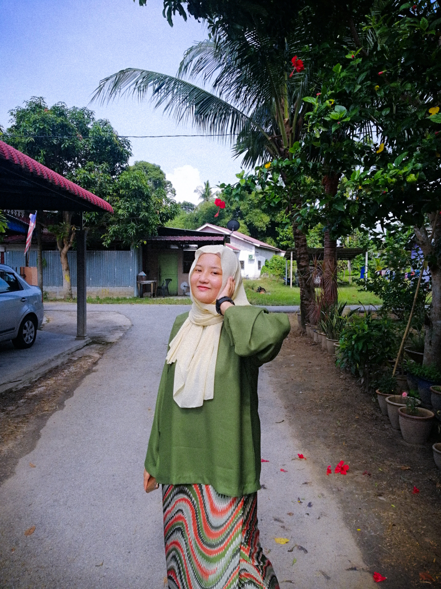
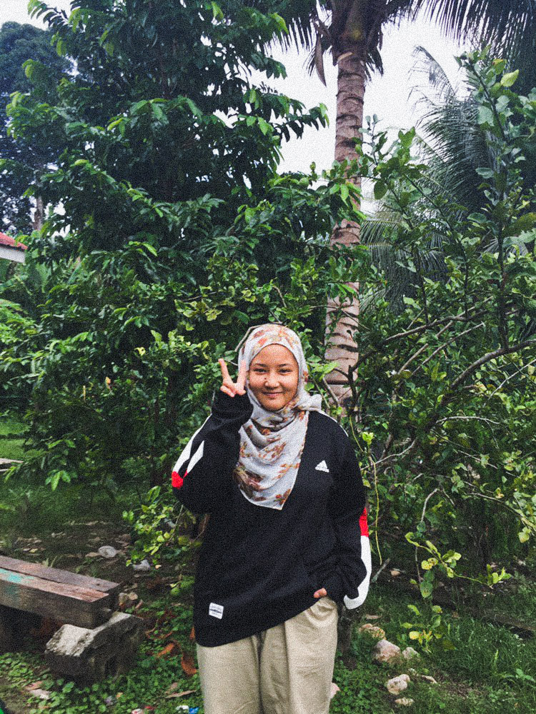
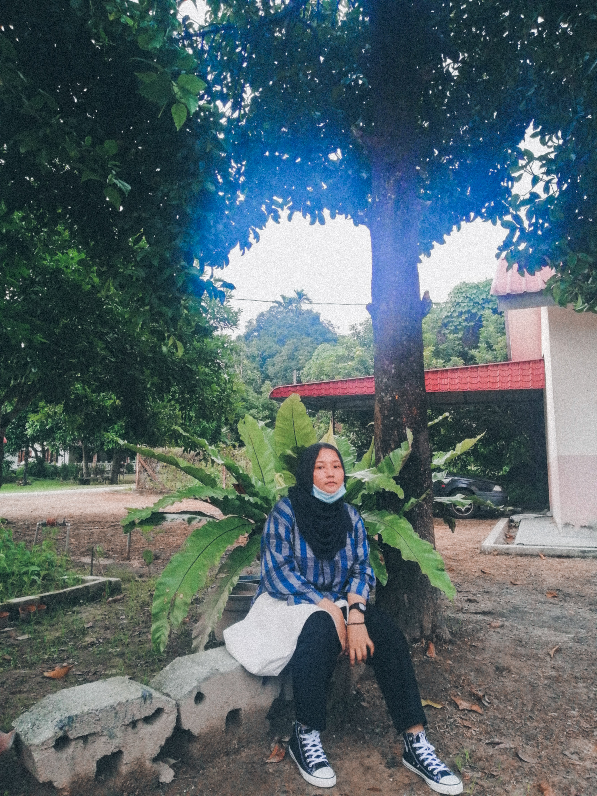

Be yourself because an original is worth more than a copy
My name is Nur Khaleeda Izlyn but mostly people just call me Ilyn. Currently a student
in Degree of Office System (Hons) at UiTM Machang, Kelantan. I've been a student since I was 5.
Not a hardworking student but will try her best in everything. I'm an introverted who like to socialize but only with people
that I comfortable with. My hobbies are eating, watching k-drama and k-show, and being a fangirl.
|  |  |  |
|---|